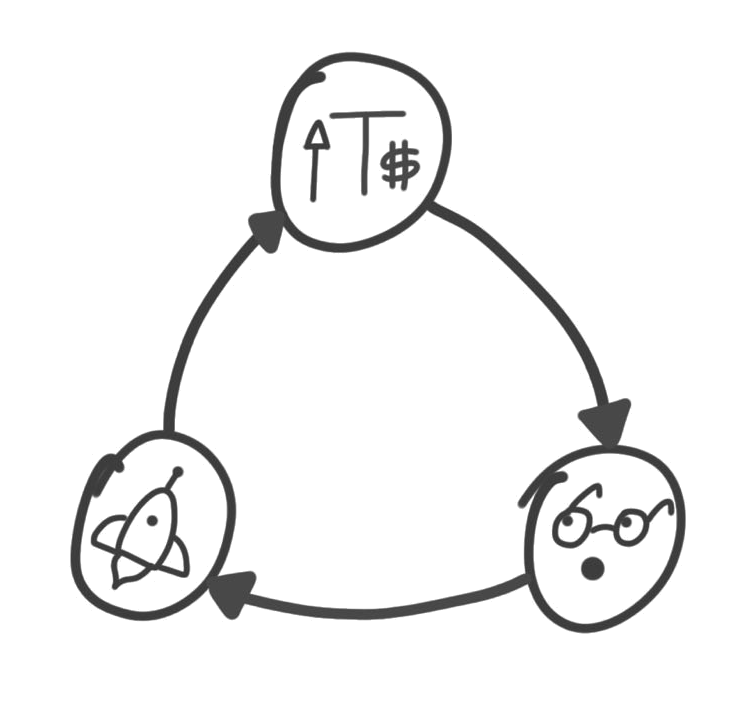

Note: see the 2020 follow-up post here: Thin Applications
Here’s one way to think about the differences between the Internet and the Blockchain. The previous generation of shared protocols (TCP/IP, HTTP, SMTP, etc.) produced immeasurable amounts of value, but most of it got captured and re-aggregated on top at the applications layer, largely in the form of data (think Google, Facebook and so on). The Internet stack, in terms of how value is distributed, is composed of “thin” protocols and “fat” applications. As the market developed, we learned that investing in applications produced high returns whereas investing directly in protocol technologies generally produced low returns.
This relationship between protocols and applications is reversed in the blockchain application stack. Value concentrates at the shared protocol layer and only a fraction of that value is distributed along at the applications layer. It’s a stack with “fat” protocols and “thin” applications.
We see this very clearly in the two dominant blockchain networks, Bitcoin and Ethereum. The Bitcoin network has a $10B market cap yet the largest companies built on top are worth a few hundred million at best, and most are probably overvalued by “business fundamentals” standards. Similarly, Ethereum has a $1B market cap even before the emergence of a real breakout application on top and only a year after its public release.
There are two things about most blockchain-based protocols that cause this to happen: the first is the shared data layer, and the second is the introduction cryptographic “access” token with some speculative value.
I wrote about the shared data layer about a year ago. Though the post has gathered some dust since, the main point remains: by replicating and storing user data across an open and decentralized network rather than individual applications controlling access to disparate silos of information, we reduce the barriers to entry for new players and create a more vibrant and competitive ecosystem of products and services on top. As a concrete example, consider how easy it is to switch from Poloniex to GDAX, or to any of the dozens of cryptocurrency exchanges out there, and vice-versa in large part because they all have equal and free access to the underlying data, blockchain transactions. Here you have several competing, non-cooperating services which are interoperable with each other by virtue of building their services on top of the same open protocols. This forces the market to find ways to reduce costs, build better products, and invent radical new ones to succeed.
But an open network and a shared data layer alone are not not enough of an incentive to promote adoption. The second component, the protocol token[1] which is used to access the service provided by the network (transactions in the case of Bitcoin, computing power in the case of Ethereum, file storage in the case of Sia and Storj, and so on) fills that gap.
Albert and Fred wrote about this last week after we had a number discussions at USV about investing in blockchain-based networks. Albert looked at protocol tokens from the point of view of incentivizing open protocol innovation, as a way of funding research and development (via crowdsales), creating value for shareholders (via token value appreciation), or both.
Albert’s post will help you understand how tokens incentivize protocol development. Here, I’m going focus on how tokens incentivize protocol adoption and how they affect value distribution via what I will call the token feedback loop.

When a token appreciates in value, it draws the attention of early speculators, developers and entrepreneurs. They become stakeholders in the protocol itself and are financially invested in its success. Then some of these early adopters, perhaps financed in part by the profits of getting in at the start, build products and services around the protocol, recognizing that its success would further increase the value of their tokens. Then some of these become successful and bring in new users to the network and perhaps VCs and other kinds of investors. This further increases the value of the tokens, which draws more attention from more entrepreneurs, which leads to more applications, and so on.
There are two things I want to point out about this feedback loop. First is how much of the initial growth is driven by speculation. Because most tokens are programmed to be scarce, as interest in the protocol grows so does the price per token and thus the market cap of the network. Sometimes interest grows a lot faster than the supply of tokens and it leads to bubble-style appreciation.
With the exception of deliberately fraudulent schemes, this is a good thing. Speculation is often the engine of technological adoption [2]. Both aspects of irrational speculation — the boom and the bust — can be very beneficial to technological innovation. The boom attracts financial capital through early profits, some of which are reinvested in innovation (how many of Ethereum’s investors were re-investing their Bitcoin profits, or DAO investors their Ethereum profits?), and the bust can actually support the adoption long-term adoption of the new technology as prices depress and out-of-the-money stakeholders look to be made whole by promoting and creating value around it (just look at how many of today’s Bitcoin companies were started by early adopters after the crash of 2013).
The second aspect worth pointing out is what happens towards the end of the loop. When applications begin to emerge and show early signs of success (whether measured by increased usage or by the attention (or capital) paid by financial investors), two things happen in the market for a protocol’s token: new users are drawn to the protocol, increasing demand for tokens (since you need them to access the service — see Albert’s analogy of tickets in a fair), and existing investors hold onto their tokens anticipating future price increases, further constraining supply. The combination forces up the price (assuming sufficient scarcity in new token creation), the newly-increased market cap of the protocol attracts new entrepreneurs and new investors, and the loop repeats itself.
What’s significant about this dynamic is the effect it has on how value is distributed along the stack: the market cap of the protocol always grows faster than the combined value of the applications built on top, since the success of the application layer drives further speculation at the protocol layer. And again, increasing value at the protocol layer attracts and incentivises competition at the application layer. Together with a shared data layer, which dramatically lowers the barriers to entry, the end result is a vibrant and competitive ecosystem of applications and the bulk value distributed to a widespread pool of shareholders. This is how tokenized protocols become “fat” and its applications “thin”.
This is a big shift. The combination of shared open data with an incentive system that prevents “winner-take-all” markets changes the game at the application layer and creates an entire new category of companies with fundamentally different business models at the protocol layer. Many of the established rules about building businesses and investing in innovation don’t apply to this new model and today we probably have more questions than answers. But we’re quickly learning the ins and outs of this market through our blockchain portfolio and in typical USV fashion we’re going to share that knowledge as we go along.
[1] Also known as App Coins, as coined – pun intended – by Naval in 2014
[2] Edward Chancellor writes a thorough and entertaining history of financial speculation and its place in society (you’ll be in awe by how similar cryptocurrency speculation today is to prior bursts of financial exuberance!) and Carlota Perez describes the important role of bubbles in the development of new technologies by attracting financial capital to research and development.